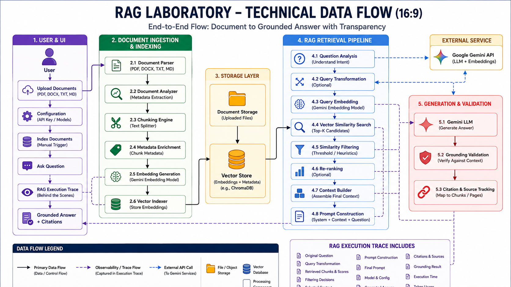

Document Intelligence
Upload documents, inspect structure and understand what the system is processing before retrieval begins.
RAG Laboratory is a transparent, interactive environment for understanding the complete Retrieval-Augmented Generation pipeline — from document ingestion and chunking to retrieval, grounding, generation and citations.
This microsite includes a static representation of the RAG Laboratory UI. It shows how the application is designed to look and behave. Download the actual application from GitHub →
The design prioritizes observability, explainability and simplicity over unnecessary enterprise complexity.

Every meaningful stage of the pipeline is designed to be visible, traceable and understandable.
Upload documents, inspect structure and understand what the system is processing before retrieval begins.
See chunk IDs, sizes, overlap, source pages and metadata, with a visual relationship back to the source document.
Inspect retrieved candidates, similarity scores, filtering decisions and the chunks selected for final context.
Follow the query from question analysis through embedding, vector search, context construction and generation.
Answers are designed around source evidence, with citation and grounding validation rather than unsupported generation.
Keep the LLM, embedding model, vector store and retrieval strategy replaceable as the project evolves.
Static UI concept — the real application is available in the repository.
The process consists of the documented stages described in the retrieved source material, with the relevant evidence assembled into the final context before generation.